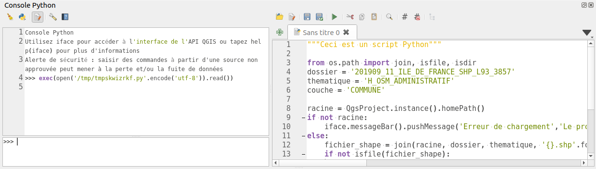

QGIS permet d'utiliser du Python dans divers emplacement que nous allons voir ci-dessous.
Python possède de très nombreux packages/modules disponibles sur internet qui fournissent des fonctions déjà écrites.
La console est accessible par le menu
Extension
->
Console Python
. Elle permet l'écriture de commande simple, une par une.
On ne peut pas enregistrer les commandes dans un fichier.
L'éditeur de script Python est accessible depuis l'icône dédié dans la console Python.
Il permet un prototypage rapide d'un script. On peut y écrire du code plus complexe en faisant intervenir
des librairies ou des classes.

Le menu Traitement dans QGIS donne accès a plusieurs algorithmes d'analyse.
Ces algorithms proviennent soient de QGIS, GDAL ou encore de plugins.
La boîte à outils de traitements ainsi que le modeleur graphique utilisent le "framework" Processing propre à QGIS.
Ce framework permet de définir les entrées et les sorties d'un algorithme. Les algorithms sont donc normalisés en
suivant tous le même modèle. Processing impose la façon d'écrire les scripts.
Écrire un script
compatible
QGIS Processing permet l'intégration dans ce menu, permet également l'utilisation de ce-dernier
dans un modèle ou encore l'utilisation en mode traitement par lot. Le framework peut aussi générer automatiquement
l'interface graphique de l'algorithme et le code est optimisé.
Il existe un modèle par défaut que l'on peut utiliser pour démarrer l'écriture d'un script Processing.
Depuis la barre d'outil traitements,
Créer un nouveau script depuis un modèle.
Ce modèle utilise la syntaxe Programmation
Orientée Objet. Depuis QGIS 3.6, on peut également utiliser la syntaxe par décorateur
@alg
.
Voir la documentation https://docs.qgis.org/testing/en/docs/user_manual/processing/scripts.html#the-alg-decorator
Depuis QGIS 3.6, on peut désormais exporter un modèle de traitement Processing en Python.
Il faut faire un clic droit sur un modèle dans la boîte à outils puis choisir "Exporter le modèle comme un algorithme Python".
On peut donc modifier ensuite ce fichier Python afin de rajouter de la logique suplémentaire.

Similaire au script Processing, une extension QGIS peut aussi avoir son propre fournisseur d'algorithme.

On peut remarquer les plugins
DataPlotly
,
QuickOSM
etc.
Ajout de Processing à un plugin QGIS :
soit lors du plugin builder
ou manuellement en suivant la documentation pour l'ajout à un plugin existant: https://docs.qgis.org/testing/en/docs/pyqgis_developer_cookbook/processing.html
Il se peut que certaines extensions ne soient que des fournisseurs Processing.
Les expressions sont souvent présentes dans QGIS. On peut les utiliser dans nombreux endroits, pour faire des sélection, des conditions etc.
On peut également les utiliser à chaque fois que vous pouvez voir ce symbole:

Un plugin, ou même simplement un utilisateur, peut enregistrer ses propres expressions. Ci-dessous, le plugin
InaSAFE
:

Exemple de code d'une expression:
@qgsfunction(args='auto', group='Custom')
def my_sum(value1, value2, feature, parent):
"""
Calculates the sum of the two parameters value1 and value2.
<h2>Example usage:</h2>
<ul>
<li>my_sum(5, 8) -> 13</li>
<li>my_sum("field1", "field2") -> 42</li>
</ul>
"""
return value1 + value2
Accessible depuis les propriétés du projet, dans l'onglet
Macros
. On peut lancer du code Python automatiquement soit:
à l'ouverture du projet
lors de l'enregistrement du projet
* ou lors de sa fermeture

Les actions sont des petits traitements que l'on peut lancer soit depuis la table attributaire ou depuis le canevas.
Par exemple, on peut ouvrir un lien WEB ou un PDF en fonction d'un attribut d'une entité. Il est possible
d'écrire les actions en Python.

On peut personnaliser un formulaire par l'ajout de logique Python. Cependant, dans QGIS 3,
l'utilisation de Python n'est plus forcément nécessaire, on peut désormais utiliser des expressions
(recommandé)
.

Sans lancer QGIS graphiquement, on peut utiliser la librairie QGIS dans nos scripts Python. On peut donc créer notre propre
application graphique ou notre propre exécutable et ainsi utiliser les fonctions de QGIS.
On peut donc faire un programme en ligne de commande qui effectue une certaine opération dans un répertoire donné.
Si l'on place un fichier nommé
startup.py
dans le dossier Python du profil de l'utilisateur, QGIS va le lancer
automatiquement à chaque ouverture de QGIS.